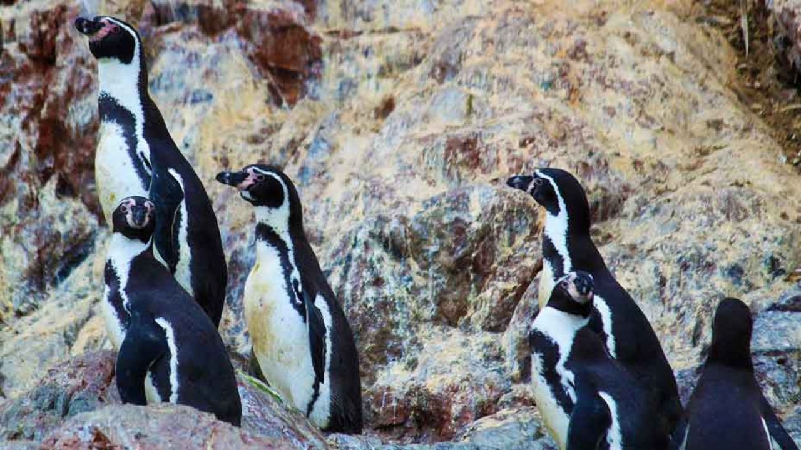
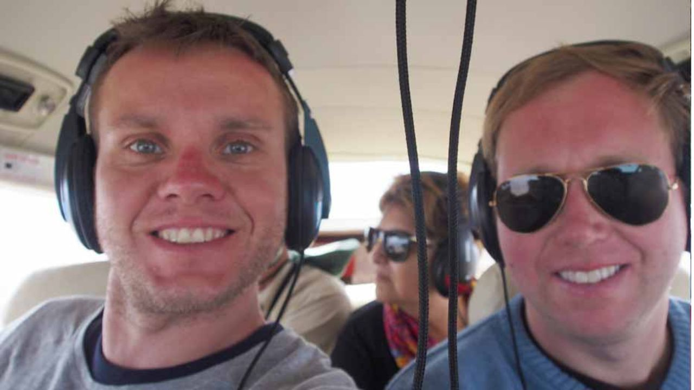

Vuelo Líneas de Nazca y Costa Sur



Lo mejor de la Costa Sur de Perú en dos días (1 noche).
¡Experimenta las Líneas de Nazca, Paracas, Islas Ballestas e Ica Pisco!
Detalle
Vuela sobre las enigmáticas Líneas de Nazca, contempla la belleza accidentada de la Reserva Nacional de Paracas, maravíllate con la abundante vida marina en las Islas Ballestas y prueba algunos de los mejores vinos de pisco en la región de Ica. Relájate junto a un pintoresco oasis en el desierto después de un emocionante paseo en buggy por las montañosas dunas. Tu estadía en Paracas será en el encantador Hotel Santa María, que ofrece habitaciones limpias y modernas con baños privados, agua caliente, televisión por cable, acceso a internet en la recepción y un desayuno continental.
Incluye:
- Todos los traslados y transporte.
- Todas las entradas e impuestos.
- Alojamiento.
- Desayuno continental.
- Guía de habla inglesa/hispana.
No Incluye:
- Extras y propinas.
Día 1
-
6:00amTraslado del Hotel a la estación Cruz del Sur
-
6:45am - 11:20amServicio de autobús de primera clase a Paracas (3 horas 35 minutos) Incluye desayuno, WiFi, películas, aire acondicionado, asiento reclinable de 160 grados extra ancho, servicio de azafata
-
11:30amTraslado al aeropuerto (15 minutos)
-
12:00pm - 1:30pmSobrevuelo de varios geoglifos de las Líneas de Nazca en avioneta Cessna Caravan con capacidad para 12 personas. (90 minutos)
-
1:45pmTraslado a Paracas - registro y oportunidad de almorzar en un restaurante frente al mar
-
3:30pm - 5:30pmTour guiado a la Reserva Nacional de Paracas (2 horas)
Día 2
-
7:45amTraslado a los muelles de Paracas desde el lugar de encuentro designado
-
8:00am - 10:00amViaje a Islas Ballestas en bote (2 horas) Incluye asientos de Primera Clase (2 asientos reservados por pasajero de Primera Clase) y guía de habla inglesa/hispana
-
10:45am - 11:45pmSalida del hotel y traslado a Huacachina (centro de buggy en dunas) en autobús
-
12:00pm - 1:00pmTour de adrenalina en las dunas de Huacachina en buggy. (60 minutos)
-
1:00pm - 3:30pmTiempo para disfrutar del almuerzo y caminar con vista al oasis
-
2:00pmOpción de salida anticipada Cruz del Sur (5 horas, almuerzo incluido)
-
3:30pm - 4:45pmTour a la bodega de Pisco (75 minutos incluyendo traslado a la estación Cruz del Sur Ica)
-
5:45pmSalida a Lima en Cruz del Sur Primera Clase (5 horas, cena incluida)
Precio:
$565
Reservar Ahora